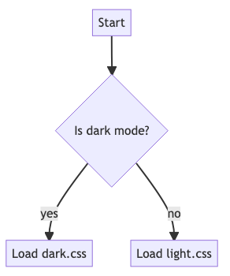

適用するCSSファイルを動的に変更する
highlight.jsを利用するとHTML上で手軽にコードハイライトを利用できて便利です。 しかし、CSSファイルがDark/Ligntモード用で別になっている1ので、 ブラウザのダークモード設定によってこれを自動で切り替えるには、工夫が必要です。
tokyo-night-dark というテーマを選んで設定してみます。
<head>
<link
href="https://cdnjs.cloudflare.com/ajax/libs/highlight.js/11.7.0/styles/tokyo-night-dark.min.css"
rel="stylesheet"
id="hljs-css"
/>
</head>
最近の主要なブラウザには、 Darkモードかどうかを判定する機能がついているので、 これを使って、ロードするCSSファイルを切り替えましょう。

window.matchMedia 2というAPIを使って、darkモードの判定をします。
const colorScheme =
window.matchMedia && window.matchMedia("(prefers-color-scheme: dark)").matches
? "dark"
: "light";
あとはこの設定に従って、 <link> 要素の href 属性を対応するCSSファイルに入れ替えれば、
動的に読み込むことができます。今回の場合はDarkモードがデフォルトなので、Lightモードの場合に
改めてファイルの取得が行われます。
const hljsStyleSheet = document.getElementById("hljs-css");
const hljsCssBaseUrl =
"https://cdnjs.cloudflare.com/ajax/libs/highlight.js/11.7.0/styles/";
hljsStyleSheet.setAttribute(
"href",
`${hljsCssBaseUrl}tokyo-night-${colorScheme}.min.css`
);
hljs.highlightAll();